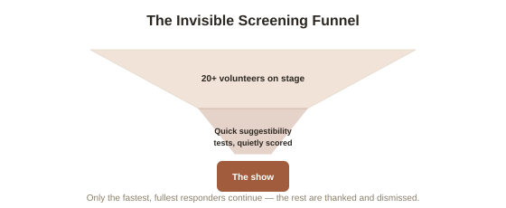
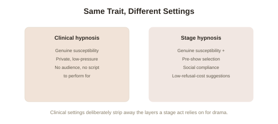

Chapter 5: Stage Hypnosis Debunked — Compliance, Selection, and Showmanship
Chapter 1 opened with the image most people actually associate with the word "hypnosis": a stage performer pulling a volunteer out of an audience, and within minutes having them cluck like a chicken, or freeze mid-motion, to a room full of laughing strangers. Four chapters later, with the real clinical and experimental evidence covered in genuine depth, it's worth closing this topic by returning to that exact image directly — because stage hypnosis is real hypnosis, in the sense that genuine hypnotic susceptibility does most of the work, but the theatrical effect depends on several additional ingredients that have nothing to do with trance at all.
The selection process is doing more work than the induction
Stage hypnotists do not hypnotize a random cross-section of the audience — they run a rapid, largely invisible screening process before the show's dramatic moments ever begin. A typical stage routine opens by inviting a large group on stage (often twenty or more) and leading them through a handful of quick, low-stakes suggestibility tests — hands clasped together and "stuck," or arms feeling heavy — while the performer quietly observes who responds fastest and most fully and, often under cover of a joke, thanks and dismisses the rest before the show's core segment begins. Chapter 2 already established that hypnotic susceptibility is a real, stable, normally distributed trait, with roughly 10-15% of people highly responsive — this pre-show filtering is precisely how a stage act reliably ends up performing only with that highly susceptible minority, without the audience ever realizing a selection process happened at all.

Social compliance and demand characteristics do the rest
Even among genuinely, highly susceptible volunteers, psychologists Nicholas Spanos and Irving Kirsch — whose social-cognitive theory Chapter 4 already introduced as a serious rival to Hilgard's neodissociation account — have documented that a stage setting adds a second, non-hypnotic layer on top of authentic susceptibility: demand characteristics (cues in a situation that communicate to a participant what behavior is expected of them, which they then often produce, consciously or not, independent of any other mechanism at work). A volunteer who walked on stage, in front of an audience, specifically because they were visibly enthusiastic and expressive during the screening tests, is now also under strong social pressure to perform the role the entire situation obviously calls for — commit to the bit or look foolish backing out in front of a laughing crowd. Spanos's own studies found that some behaviors stage audiences read as deep trance (exaggerated compliance, willingness to look silly) actually correlate more strongly with a volunteer's general sociability and willingness to play along in a social performance than with their measured hypnotic susceptibility score alone.
The performer's control is more scripted than it looks
Experienced stage hypnotists also rely on a further technique unrelated to hypnosis itself: they design suggestions to be difficult for a volunteer to refuse without seeming to make a deliberate, public show of it. Asking someone to imagine an onion is a fragrant apple and take a bite is a suggestion most cooperative, mildly susceptible volunteers will simply go along with, because the cost of visibly, deliberately refusing in front of a crowd (interrupting the show, seeming a poor sport) is higher than the mild cost of complying. This is not a claim that the performer's suggestions have no genuine hypnotic component for the more susceptible volunteers on stage — Chapter 2 and Chapter 3's evidence for real suggestion-driven changes in perception stands — but it explains why even the small minority of volunteers who are only mildly or moderately susceptible can still appear, briefly, to comply as fully as the highly susceptible ones the routine was actually designed around.

Closing the loop on the topic
Read across all five chapters, hypnosis turns out to be a good working example of a theme this library returns to often: a real, measurable, individually variable psychological phenomenon (genuine attentional and perceptual change, Chapter 1; a stable, brain-linked trait, Chapter 2; real analgesic effects under fMRI, Chapter 3; genuinely unresolved theoretical disagreement about mechanism, Chapter 4) that also happens to be dramatically over-simplified and reliably exaggerated by its most visible popular showcase. Neither the dismissive "it's all just fakery" reading nor the credulous "totally mysterious mind control" reading survives contact with the actual research — the accurate picture, as usual, is more specific and more interesting than either extreme.
Try this
Ideas for noticing or testing this in your own life.
- Next time you watch stage hypnosis footage (plenty is online), watch specifically for the opening screening segment — most acts include it, and once you know to look for it, the selection process becomes visible rather than invisible.
- Notice demand characteristics in your own life — situations where you found yourself doing what a setting clearly called for, independent of any explicit instruction, the same everyday mechanism Spanos identified operating on stage.
Worth pulling on?
A few loose threads from this chapter — if any of these genuinely grab you, that's a good sign of where to go next.
- The gap between a dramatic popular showcase and the more careful, evidenced reality behind it is a pattern worth testing against a closely related phenomenon in this library. → Already in the library: Placebo & Nocebo Effects covers expectation-driven physiological change through a completely different, and in some ways more surprising, set of studies.
- Demand characteristics and social compliance under pressure from an authority figure or a crowd are a major theme in a completely different area of psychology. → Already in the library: Obedience & Conformity covers Milgram's and Asch's classic studies on exactly this kind of situational pressure.